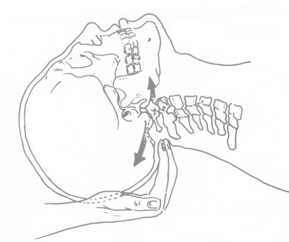

Cranial Sacral Therapy
The craniosacral system is one of the most exquisitely designed systems of the human body. It is comprised of the cerebral spinal fluid (CSF) and the membranes that support the integrity of the brain and spinal cord. These membranes, called dura, are anchored by the cranial bones, the vertebra, and the sacrum.
How Craniosacral Therapy Works
The craniosacral system plays a vital role in maintaining the environment in which the central nervous system functions. It influences the immune system by moving pathogens, toxins and other unwanted materials away from brain and nerve tissues. The CSF also serves as a shock absorber protecting these delicate tissues from trauma.
When the craniosacral system is functioning optimally, CSF flows freely. When restrictions develop due to trauma, illness, or stress, the system's ability to function becomes compromised. This can affect motor function, learning patterns, emotions, and overall health.
The Therapy Process
Craniosacral therapy uses gentle touch to evaluate and enhance the functioning of the craniosacral system. The practitioner uses a light touch - generally no more than the weight of a nickel - to release restrictions in the craniosacral system and improve the function of the central nervous system.
Most sessions last about an hour. The gentle, non-invasive approach makes it suitable for people of all ages, from newborns to the elderly.
Conditions Addressed
- Migraines and headaches
- Chronic neck and back pain
- Autism
- Stress and tension related disorders
- Motor coordination impairments
- Infant and childhood disorders
- Brain/spinal cord injuries
- Chronic fatigue
- Fibromyalgia
- TMJ syndrome
- Scoliosis
- Central nervous system disorders
- Learning disabilities
- PTSD, ADD and ADHD
Sources: Upledger Institute; CranioSacral Therapy - Accessing the Healer Within by Paul Brown
Experience Gentle Healing
Discover how craniosacral therapy can help restore balance to your central nervous system and promote natural healing.